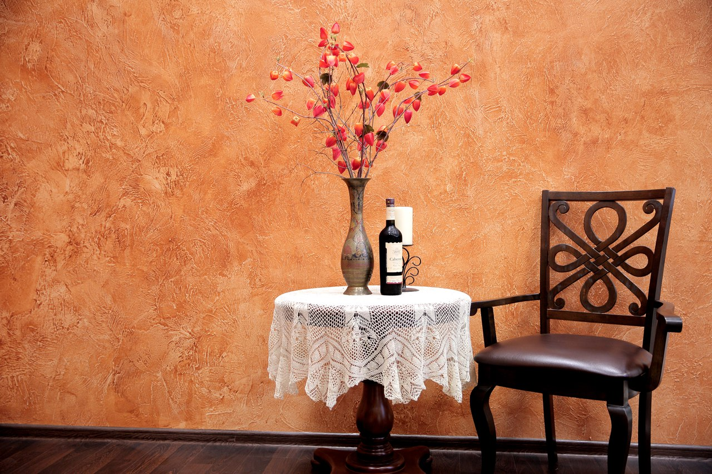

Декоративная штукатурка Нижний Новгород
Декоративная штукатурка – популярное отделочное средство. Она
изготавливается на основе минерального, либо синтетического материала, включает
в себя разнообразные наполнители и другие добавки.
Декоративная штукатурка приобретает все большую востребованность при оформлении
как общественных, так и частных сооружений. Она давно стала очень эффектным и
эффективным способом отделки стен.
Основные достоинства декоративной штукатурки
- Экологичность и долговечность.
- Отличное соотношение цены и качества изделий.
-
Возможность скрыть неровности и дефекты поверхности. При этом во многих
случаях не требуется специально выравнивать поверхность и делать
дополнительную обработку;
в процессе высыхании не возникают какие-либо стыки, швы, формируется целостный вид; - Материал штукатурки не впитывает запахи.
-
Уникальный яркий дизайн. Специальный состав смеси гарантирует долговечную
первоначальную сохранность, не утрачивая эстетические особенности.
есть возможность колорировать в любой подходящий цветовой вариант, воплощая любой желаемый художественный проект; - Высокий уровень звукопоглощения.
- Возможность выбора влагостойких вариантов. Например, флоковая штукатурка отличается особенно высокой степенью экологичности. Поэтому даже при высокой степени влажности исключено появление плесени или грибка. Поэтому данный материал прекрасно подходит для ванных комнат, а также для детской или столовой.
- Для нанесения не требуется специальная подготовка поверхности.
- Высокий показатель воздухопроницаемости.

Разновидности декоративной штукатурки
Цветная — предназначена преимущественно для отделки внутренних стен, также
прекрасно подходит для дверных и оконных проёмов.
Каменная — очень эстетична, по внешнему виду напоминает каменную кладку из
натурального камня.
Венецианская — очень похожа на настоящий мрамор.
Терразитовая — великолепно подходит для отделки внутренних стен и фасадов.
Шёлковая — служит отличным средством для внутренних отделочных работ.
Отличается пожаробезопасностью, поскольку негорючая, и не будет накапливать
статическое электричество. Включает в себя натуральные или синтетические
волокон, также в данный материал нередко добавляют минеральные наполнители, а
также те или иные декоративные добавления.
Применение
Поскольку состав обычно включает в себя такие элементы, как цемент, акрил или силикон, декоративная штукатурка абсолютно не опасна для здоровья. Поэтому ее задействуют как для украшения интерьера, так и для экстерьерного оформления. Благодаря данному материалу нетрудно творить великолепные уникальные рисунки на различных поверхностях.
Красивое, простое в монтаже покрытие прослужит в течение долгого времени. Поверхности, обработанные этой штукатуркой, никогда не потрескаются, а экологичный состав позволяет использовать покрытие в любых помещениях.
Используя декоративные материалы, специалисты преображают банкетные залы
ресторанов, холлы магазинов, вестибюли гостиниц, а также помещения многих
других зданий.
В результате можно увидеть самую разную фактуру:
срез дерева с годичными кольцами;
имитацию кирпичной кладки;
вид узоров кожи или шелковистых волокон;
великолепный художественный барельеф;
Где можно приобрести
Заказать декоративную штукатурку в Нижнем Новгороде можно, воспользовавшись услугами нашего интернет-магазина. На сайте представлена только лучшая, качественная и сертифицированная продукция по доступным ценам. В компании работают опытные и квалифицированные сотрудники, которые всегда готовы оказать профессиональную помощь. Они выслушают любые персональные пожелания, и предложат выбор наиболее подходящих вариантов декоративной штукатурки.
Решили купить декоративную штукатурку в Нижнем Новгороде, но хотите задать несколько вопросов? Тогда обращайтесь по контактным данным, указанным на официальном сайте компании. Опытные и квалифицированные сотрудники с радостью предоставят профессиональные услуги и бесплатную консультацию. Обращайтесь, всегда рады помочь!